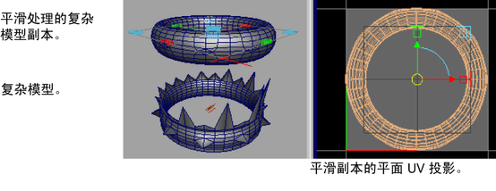
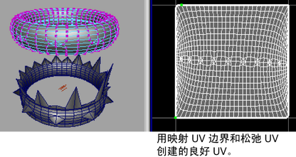
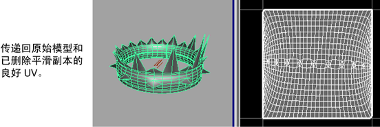

若要在具有不同拓扑的网格（即，每个网格上顶点的数量、排列和连接不同）之间传递 UV、逐顶点颜色 (CPV) 和顶点位置信息，请使用“传递属性”(Transfer Attributes)功能。
“传递属性”(Transfer Attributes)通过对源网格上的顶点信息进行采样来传递顶点数据，然后根据基于空间的比较将信息传递给指定的目标网格。从而实现对目标网格的修改。
使用“传递属性”(Transfer Attributes)传输顶点属性非常适用于以下情况：
- 将完成的 UV 布局（包括多个 UV 集）从一个曲面网格传递到另一个没有现有 UV 的网格。
- 将 UV 布局从高分辨率模型传递到低分辨率版本。

- 将逐顶点颜色 (CPV) 数据（包括多个颜色集）从高分辨率模型传递到低分辨率版本。
- 在低分辨率曲面网格上修改顶点位置以匹配高分辨率版本上的位置。
- 将顶点信息从曲面网格的某一半镜像到另一半。例如，通过采样网格某一半的属性信息并将数据传递给网格相反的一半，可以确保网格上的 UV、顶点和颜色信息对称。
注：
根据需求，您可以将“传递属性”(Transfer Attributes)功能设定为单独或一次性传递 UV 集、CPV 颜色集和顶点位置。
虽然源和目标网格可以在拓扑上有很大不同，但是因为采样的性质和发生的传递过程，默认传递设置要求将对象放置在空间中的相同位置。
您也可以使用“传递属性”(Transfer Attributes)翻转 UV 壳在“UV 纹理编辑器”(UV Texture Editor)中显示时 UV 壳的方向。这样可以简化 UV 布局和纹理工作流。
在单独网格之间传递属性
- 在场景视图中，移动源和目标网格，使它们按属性传递所需的方式定位和定向。确保按先后顺序选定源网格和目标网格。
注： 选择的顺序很重要。最后选定的对象将始终被认为是传递操作的目标。
必须在对象模式下选择源网格；对于目标网格，可以在对象模式下选择，也可以通过选择目标网格上待修改区域中的各个顶点来进行选择。
如果在场景视图中难以选择源网格或目标网格，则将网格显示更改为线框模式或通过使用大纲视图来选择这两者。
- 选择“网格 > 传递属性”(Mesh > Transfer Attributes) >
 。在传递属性选项(Transfer Attributes Options)窗口中，指定“要传递的属性”(Attributes to Transfer)，如下所示：
。在传递属性选项(Transfer Attributes Options)窗口中，指定“要传递的属性”(Attributes to Transfer)，如下所示：
- 如果要传递源网格上的顶点信息并修改目标网格上的顶点以进行匹配，请将“顶点位置”(Vertex position)设定为“启用”(On)。默认设置为“禁用”(Off)。
- 如果要对源网格的所有 UV 进行采样并传递到目标网格，则将“UV 集”(UV sets)设定为“全部”(All)。如果存在多个 UV 集，“全部”(All)设置可确保对所有这些集进行采样并传递到目标网格。如果源网格具有多个 UV 集，您可以通过选择“当前”(Current)选项，选择性传递当前活动 UV 集。默认设置为“全部”(All)。
- 如果希望对源网格的全部 CPV 数据进行采样并将这些数据传递到目标网格，请将“颜色集”(Color sets)设定为“全部”(All)。如果存在多个颜色集，“全部”(All)设置可确保对所有这些集进行采样，并将这些集传递到目标网格。如果源网格具有多个 CPV 集，您可以通过选择“当前”(Current)设置，选择性传递当前活动颜色集。默认设置为“全部”(All)。
- 通过按以下方式设定“采样空间”(Sample space)设置，指定希望的采样发生方式：
- 使用“世界”(World)设置可以在世界空间中进行采样。这应该用于大多数的属性传递操作。这是默认设置。
- 如果对象有相同的大小和形状，但可能已在场景中转换、旋转或缩放（例如，在不同位置有两张椅子），则使用“局部”(Local)设置。如果要并列比较源网格和目标网格，则使用“局部”(Local)设置。
- 如果源网格和目标网格之间不存在有用的相关性，则使用“UV”设置在 UV 空间中对属性采样。例如，如果网格的比例迥异或者在不同比例下构建，但是网格在 UV 空间中共享一个公用贴图。例如，如果巨人和矮人模型面的 UV 映射在 UV 纹理空间中处于相同位置，则巨人和矮人模型可以基于它们的 UV 纹理坐标而相关。
注： 使用“UV”设置来确定属性传递的发生方式与在模型之间物理传递 UV 数据非常不同。传递 UV 属性通常使用“世界”(World)或“局部”(Local)空间设置完成。
- 使用“组件”(Component)设置可以通过组件的 ID 将属性直接从一个组件传递到另一个组件。若要使用该设置，两个对象必须具有相同数量的顶点、面和边，并且两个对象上这些组件之间的关系必须相同。例如，如果要将 UV 纹理贴图从一个头部传递到相同头部的拉伸版本，则使用该设置。
- 使用“拓扑”(Topology)设置可以在对象的拓扑相同而组件 ID 不同时将属性直接从一个组件传递到另一个组件。例如，Maya 中的某些选项可能会重新排列模型上的顶点顺序。该选项允许您通过匹配的拓扑而不是不匹配的顶点顺序，传递原始网格的纹理贴图。
- 基于其他指定要求，设定其余选项：
- 如果希望属性传递跨定义的轴（“X”、“Y”、“Z”）发生，请设定“镜像”(Mirroring)选项。请确保已选定沿着镜像边界的顶点。如果源采样和目标传递发生在相同的网格上，必须设定镜像轴。默认设置为“禁用”(Off)。
- 如果要对 UV 进行采样，并且希望传递的 UV 壳在出现在 UV 纹理编辑器中时沿“U”或“V”轴翻转，请设定“翻转 UV”(Flip UVs)选项。如果要在相同曲面网格上对 UV 进行镜像操作，则该选项将非常有用。默认设置为“禁用”(Off)。
- 如果希望源网格中的硬颜色边在将 CPV 数据传递到目标网格时保持不变，请将“颜色边界”(Color borders)设定为“保留”(Preserve)。否则，如果曲面拓扑非常不同，可以将“颜色边界”(Color borders)选项设定为“忽略”(Ignore)。默认设置为“保留”(Preserve)。
- 单击“传递”(Transfer)传递属性并关闭选项窗口，或者单击“应用”(Apply)传递属性并保留窗口。
在相同曲面网格上镜像顶点属性
- 在场景视图中，选择曲面网格上的要通过“传递属性”(Transfer Attribute)功能修改的组件（即，面、顶点或边）。
“传递属性”(Transfer Attributes)功能将绕指定的镜像轴对曲面采样并将新的值指定给选定组件。所有未选定组件都将保留其原始属性值。
- 选择“网格 > 传递属性”(Mesh > Transfer Attributes) >
。
- 根据工作流，按如下方式设定“传递属性”(Transfer Attributes)：
- 指定要传递的属性（“顶点位置”(Vertex Position)、“UV 集”(UV Sets)、“颜色集”(Color Sets)）
- 指定属性镜像操作所围绕的轴。例如，如果要基于所选内容，围绕 X 轴对属性进行镜像操作，则将“镜像”(Mirroring)设定为“X”。
- 单击“传递”(Transfer)传递属性并关闭选项窗口，或者单击“应用”(Apply)传递属性并保持窗口处于打开状态。